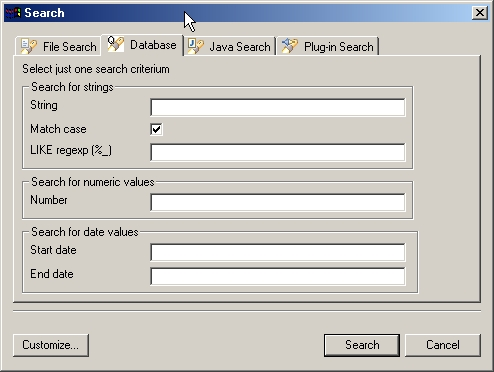
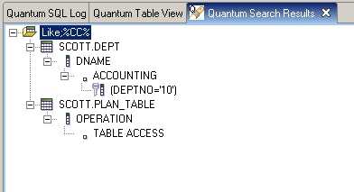

The Search utility is somewhat changed, I append the relevant portion of the help.

You can for example introduce a string like "JAPAN" in the String box, and Quantum will search all selected database objects (tables, views...) for a exact match of the string. That is, a column that has the exact value "JAPAN". If you uncheck the Match case option, the search will ignore the case of the string. However, that's not guaranteed to work, as it depends on the capabilities of the database.
If you want to search for all columns that contain the "JAPAN" string, just use the LIKE regexp (%_) text box, and write "%JAPAN%". In this box you can insert regular expressions with LIKE syntax, that is, using the wildcard characters % and _ , where % will substitute for any string, and _ will substitute for a single character. Please note that, even if your database supports LIKE searchs into numeric columns (Oracle, for example), Quantum will not attempt it, and search only textual columns, as long as they are defined searchable by the database.
If you want to search for a number, insert it into the Number text box and it'll attempt to find an exact match in numeric columns. Same goes for dates, where you can specify just one (Start date), or a range with a Start date and an End date.
The search results will appear in the Quantum Search Results view, where you can see the tables found, the column(s) where the result was found, and the needed key (in case it exists) needed to retrieve the matching rows. Double-click on the tables names will open the table in the Table View. If you want just the column where the search succeeded, double-click on the column. If you want just the row where the search succeeded, double-click on the "key" entry.

And that's all there is to the search. Many variables will affect the result of your search, including database capabilities and undiscovered bugs, so don't take the results as complete or definitive.
Notes for developers: